Bioingeniería - Facultad de Ingeniería - UNSTA
2026
Dr. Ing. Facundo Adrián Lucianna
Ing. Facundo Roldán
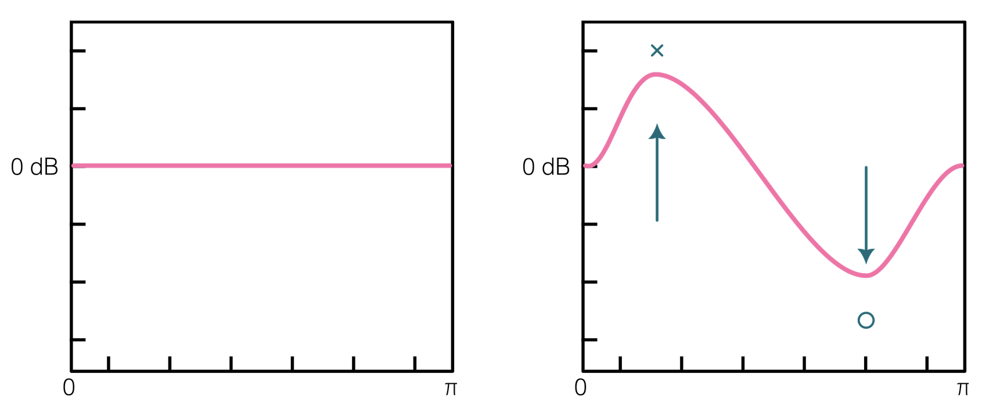
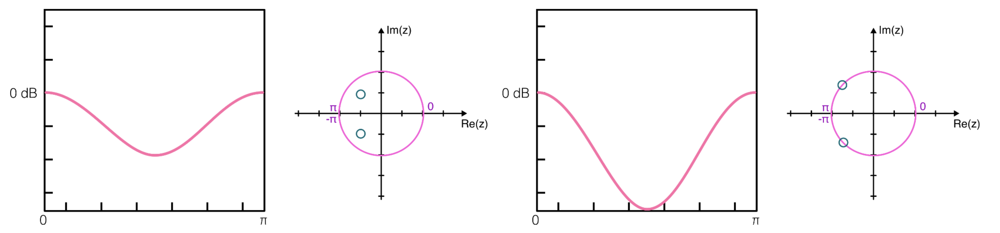
A la hora de poner ceros y polos, debemos tener en cuenta las siguientes reglas:
A la hora de poner ceros y polos, debemos tener en cuenta las siguientes reglas:
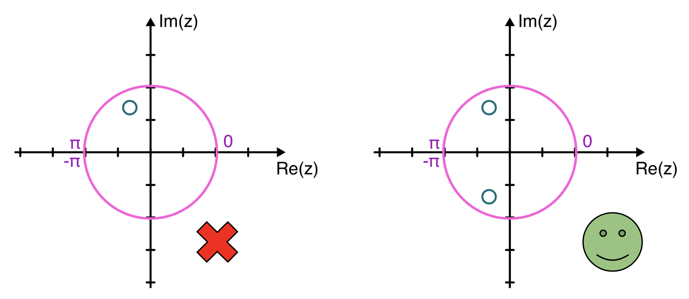
A la hora de poner ceros y polos, debemos tener en cuenta las siguientes reglas:
¿Cómo ponemos polos y ceros? Usamos la notación polar:
$$z = re^{j\omega} = |z|e^{j\omega}$$
Donde $r$ es la distancia al centro:
$\omega$ es la frecuencia, recordemos que esta entre $0$ y $\pi$ ($0$ y $f_s/2$).
¿Cómo ponemos polos y ceros? Usamos la notación polar:
$$z = re^{j\omega} = |z|e^{j\omega}$$
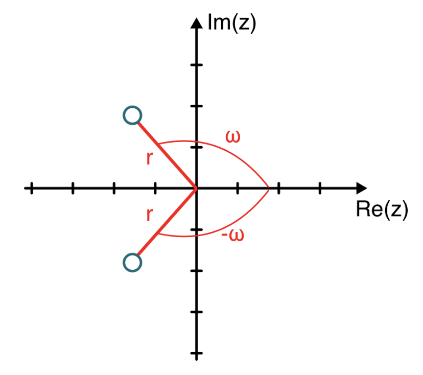
Una vez que tenemos ubicados los polos y ceros, pasamos a coordenadas cartesianas:
$$Re(z) = r\cos(\omega) \qquad Im(z) = r\,\text{sen}(\omega)$$
Luego se trabaja algebraicamente para obtener los polinomios:
$$H(z) = b_0 z^{-K+L} \frac{\prod_{k=1}^{K}(z - z_k)}{\prod_{l=1}^{L}(z - z_l)}$$
$$H(z) = \frac{\sum_{k=0}^{K} b[k] z^{-k}}{\sum_{l=0}^{L} a[l] z^{-l}}$$
$$y[n] = \sum_{k=0}^{K-1} b[k]\,x[n-k] - \sum_{l=1}^{L-1} a[l]\,y[n-l]$$
Ejemplo: Veamos la siguiente señal:
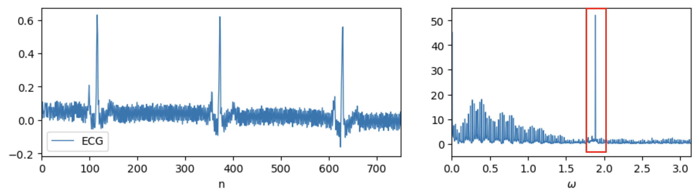
Ejemplo: Veamos la siguiente señal:
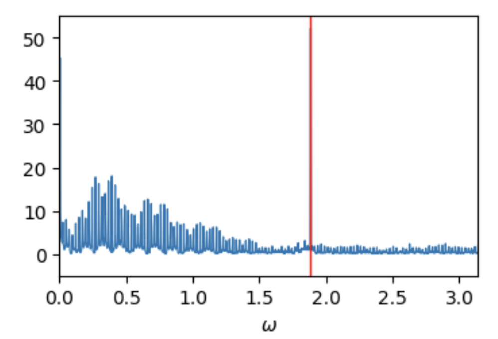
Ejemplo: Colocamos un cero en $\omega_{60} = 0.6\pi$ y su conjugado en $-0.6\pi$:
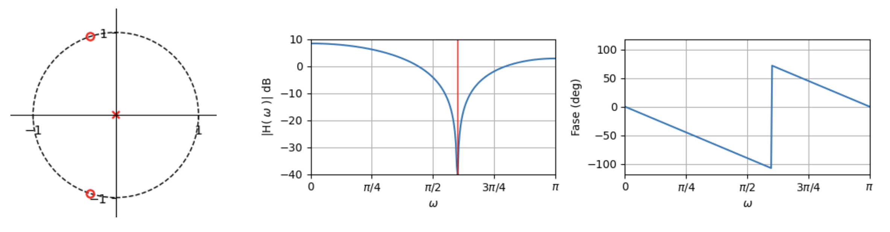
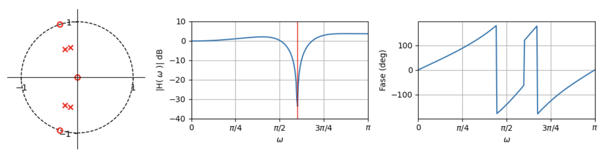
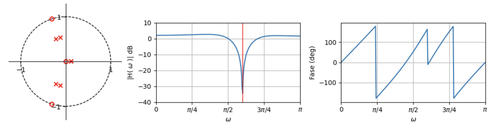
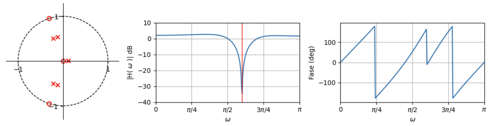
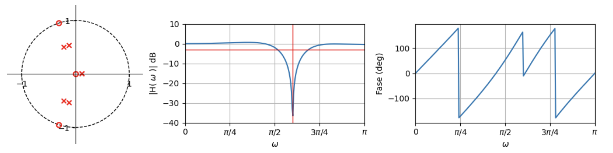
Conforme con el filtro, obtengamos la función de transferencia:
$$H(z) = 0.82\,z^3 \frac{1 + 0.6z + z^2}{-0.018 + 0.05z + 0.06z^2 + 0.57z^3 + 0.47z^4 + z^5}$$
$$H(z) = \frac{0.82z^{-2} + 0.51z^{-1} + 0.82}{-0.02z^{-5} + 0.05z^{-4} + 0.06z^{-3} + 0.57z^{-2} + 0.48z^{-1} + 1}$$
Los coeficientes son:
b = [0.82, 0.51, 0.82]
a = [1, 0.48, 0.57, 0.06, 0.05, -0.20]Con los coeficientes, podemos aplicar el filtro:
b = [0.82, 0.51, 0.82]
a = [1, 0.48, 0.57, 0.06, 0.05, -0.20]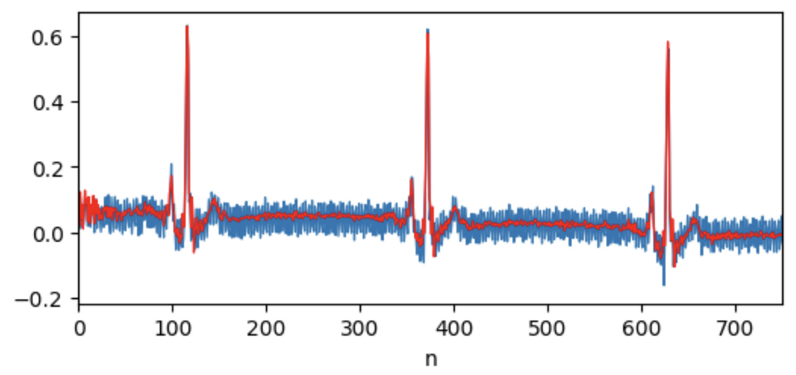
Con los coeficientes, podemos aplicar el filtro:
b = [0.82, 0.51, 0.82]
a = [1, 0.48, 0.57, 0.06, 0.05, -0.20]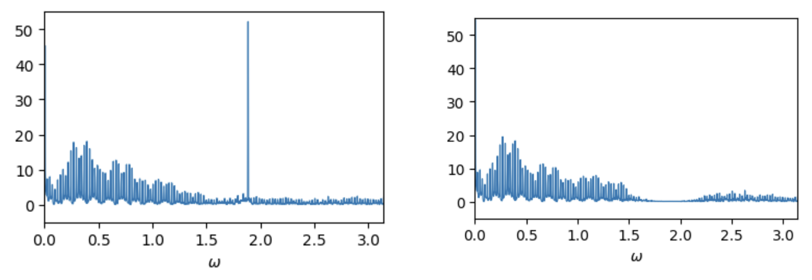
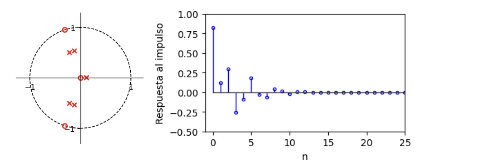
$$H(z) = \sum_{k=0}^{19} b[k]\,x[n-k]$$
Nos queda:
b = [0.82, 0.12, 0.29, -0.25, -0.09, 0.18, -0.03, -0.07,
0.04, 0.01, -0.02, -0.002, 0.005, -0.003, -0.0007, 0.001,
-0.0001, -0.0003, 0.0003, 0.0001, 0.00001]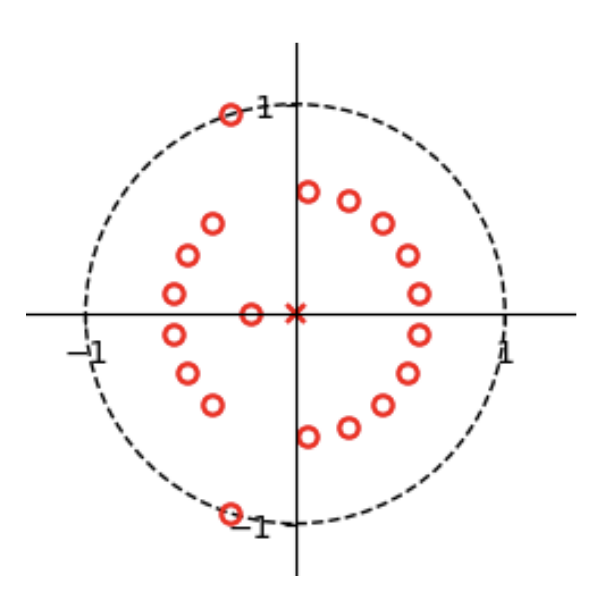
En este caso, la respuesta en frecuencia del filtro FIR queda:
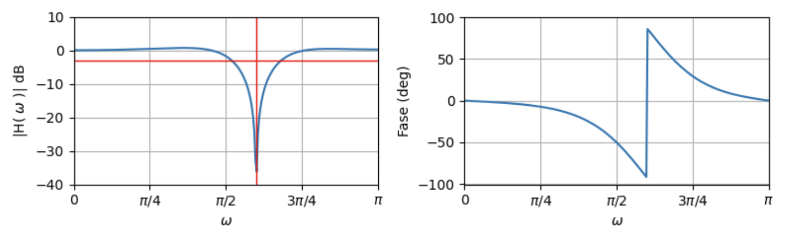
Aplicando el filtro FIR a la señal ECG:
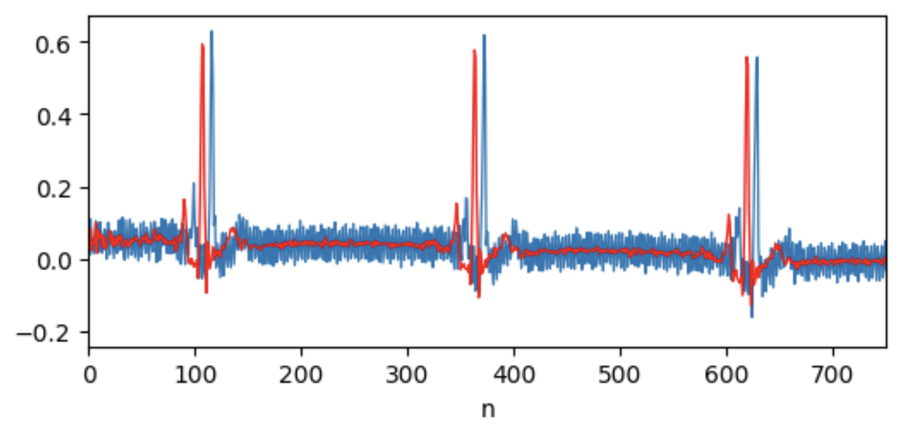
Bioingeniería - Facultad de Ingeniería - UNSTA